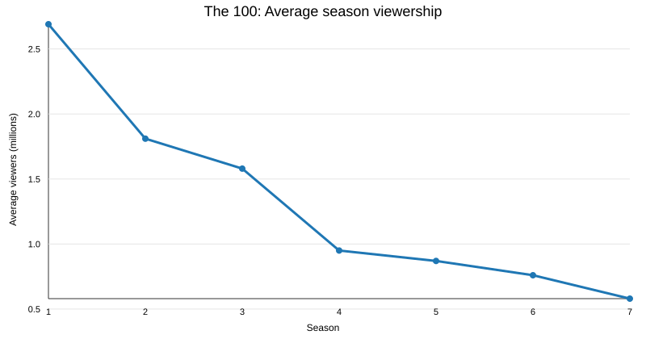
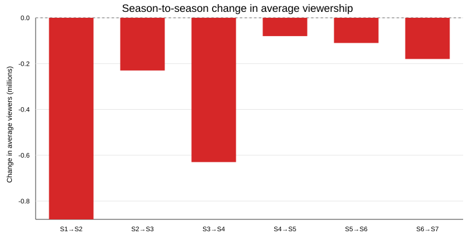

The 100 is a post-apocalyptic science fiction drama that premiered on The CW in 2014. The show follows young survivors sent from a space habitat back to Earth to test whether the planet is habitable again.
Source: Wikipedia — The 100
| Season | Average viewers (millions) |
|---|---|
| 1 | 2.69 |
| 2 | 1.81 |
| 3 | 1.58 |
| 4 | 0.95 |
| 5 | 0.87 |
| 6 | 0.76 |
| 7 | 0.58 |
Source: Wikipedia — List of The 100 episodes
| Maximum average season viewership (M) | 2.69 |
|---|---|
| Minimum average season viewership (M) | 0.58 |
| Mean average season viewership (M) | 1.32 |
| Total drop from Season 1 to Season 7 (M) | 2.11 |


The overall trend is a steady decrease in average season viewership. For example, average viewership decreased by 0.71 million between Season 3 and Season 5 (from 1.58M to 0.87M), which is about 44.9%.
A larger decline is visible from Season 1 to Season 4, followed by smaller declines in later seasons.